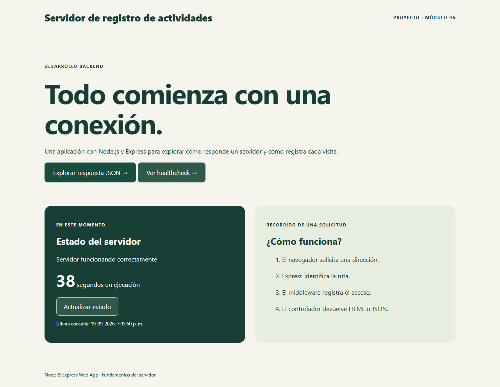

Consultar
La página principal muestra el estado. El botón «Actualizar estado» consulta de nuevo al servidor.
PROYECTO BACKEND / MÓDULO 6
Aplicación educativa independiente desarrollada con Node.js y Express. Su pantalla permite consultar el estado del servidor y actualizar el tiempo que lleva en ejecución.
Ver aplicación →
Demostración disponible en este equipo mientras el servidor local esté iniciado.
La página principal muestra el estado. El botón «Actualizar estado» consulta de nuevo al servidor.
Las rutas /status y /health devuelven JSON con estado, mensaje, tiempo de ejecución y fecha.
Cada acceso GET a las rutas principales añade fecha, método y ruta a logs/log.txt.

Las rutas reciben la solicitud, el middleware registra el acceso, el servicio escribe el archivo y el controlador entrega HTML o JSON. Esta separación permite localizar errores y comprobar cada responsabilidad.
Se verificaron las rutas públicas, la respuesta 404, la persistencia del registro y el manejo de un fallo de escritura mediante dos pruebas automatizadas.
Es un proyecto del Módulo 6. No utiliza PostgreSQL, cuentas de usuario ni JWT. Requiere un servidor Node.js para la demostración interactiva; esta página y la captura pueden consultarse en el portafolio estático.
Descargar código fuente ↓